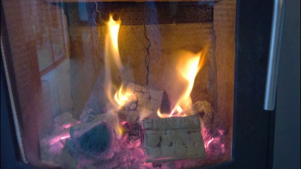

A researcher at Queen’s University has developed a process to transform barley waste from breweries into a range of products including renewable fuel, charcoal for barbecues and water filters.
Dr Ahmed Osman from the School of Chemistry and Chemical Engineering says the technique is low cost and involves only a few steps.
The grain is dried out and two common and cheap chemicals are applied - phosphoric acid and potassium hydroxide. This produces activated carbon and carbon nanotubes both of which are in high demand.
There are clear benefits. The output could replace imported wood pellets. There are also the advantages of using more locally produced resources and reducing emissions associated with the agriculture sector.
Dr Osman says: “Across the globe there is a real demand for carbon as it is used to create fuel for households, parts for water filters and charcoal for barbecues. If we are able to take something that would otherwise be a waste and turn it into a useful biofuel, it can only be a good thing for our planet. It could really help to solve global waste and energy problems.”
